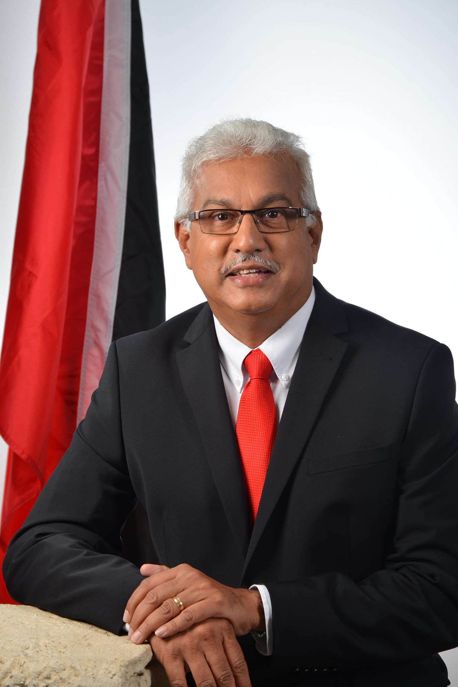

Our Mission
To provide effective leadership for the health sector by focusing on evidence-based policy making; planning; monitoring; evaluation; collaboration and regulation.”
The Ministry of Health of Trinidad and Tobago serves as the nation's primary authority overseeing the health system, ensuring that all health-related organizations and institutions adhere to safety standards. Its mission is to provide effective leadership in the health sector through evidence-based policymaking, planning, monitoring, evaluation, collaboration, and regulation. At the helm is the Honourable Terrence Deyalsingh, who has been serving as Minister of Health since September 11, 2015. As the Member of Parliament for St. Joseph, Mr. Deyalsingh has been instrumental in steering the country's health policies, particularly during critical periods such as the COVID-19 pandemic.
You can visit us here
Back to Top